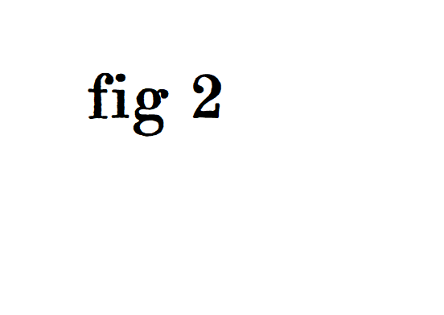
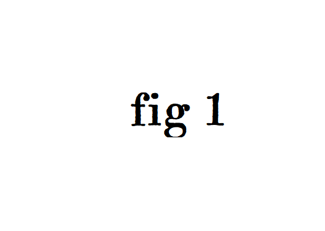
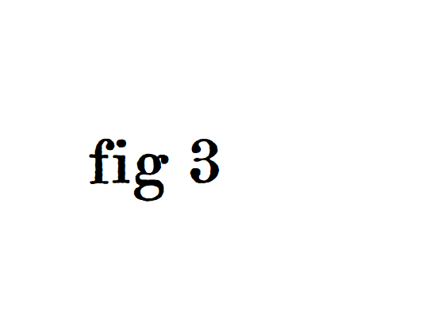
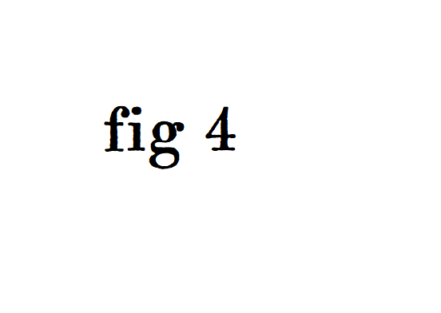

Culoare
Parcurile și grădinile se umplu de flori, iar orașul devine mai vesel.
Primăvara schimbă orașul. Lumina este mai caldă, parcurile devin mai vii, iar Timișoara capătă un aer proaspăt și optimist.
Descoperă mai multAcest site prezintă frumusețea primăverii în Timișoara. Am ales această temă deoarece orașul este deosebit în acest anotimp: apar florile, oamenii ies mai mult la plimbare, iar spațiile verzi devin mai atractive.
Primăvara este anotimpul renașterii. Totul pare mai luminos, mai curat și mai plin de energie.


Parcurile și grădinile se umplu de flori, iar orașul devine mai vesel.

Temperaturile plăcute fac plimbările și ieșirile în aer liber mult mai agreabile.

Aerul este mai curat, iar peisajul natural oferă o stare de bine.
În primăvară putem merge în parc, pe malul Begăi, în centrul orașului sau la diferite evenimente organizate în aer liber. Este perioada ideală pentru fotografii, relaxare și timp petrecut cu prietenii.